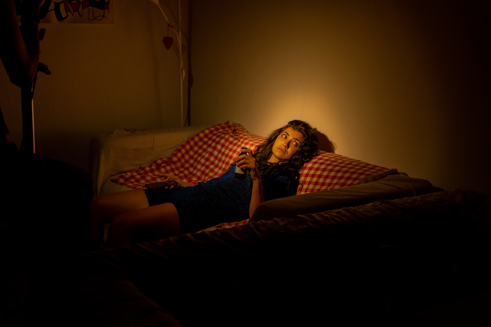

Euphoria
L’abril de 2026 se’m va presentar l’oportunitat de participar en un remake d’una escena d’Euphoria, amb els meus companys de classe. Es tracta d’un projecte que comprèn tot el procés d’un rodatge, des de la preproducció fins a la postproducció. En el meu cas, em vaig posar dins el departament d’art, on vaig tenir l’oportunitat de recrear els escenaris que sortien a l’escena escollida.